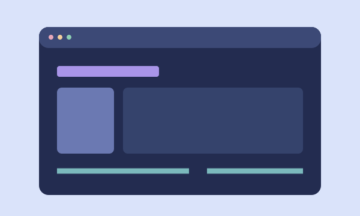

DALE ESPACIO A LO QUE QUIERES APRENDER
Pequeños pasos.
Grandes posibilidades.
Explora una experiencia de aprendizaje con cursos claros, lecciones a tu ritmo y un progreso que puedes seguir. Tu próxima idea empieza con algo nuevo.
Una plataforma educativa de ejemplo, adaptable a tu marca.

Tu primera experiencia web
Lecciones breves, ideas prácticas y un siguiente paso claro.
ENCUENTRA TU PRÓXIMO PASO
Cursos para comenzar
Contenido introductorio de demostración.
Sin matrícula ni cobros reales.
No hay cursos con ese filtro.
LMS STARTER KIT · CIEM
Tu contenido.
Tu propia plataforma educativa.
Prueba el recorrido de un estudiante y la gestión de lecciones. Podemos evaluar una plataforma para academias, capacitaciones internas o comunidades de aprendizaje.
Cotizar mi plataforma LMS ↗Cursos y contenido organizadoLecciones publicadas y borradores.
Una experiencia de aprendizajeInscripción, progreso y evaluaciones de ejemplo.
Un alcance para tu proyectoUsuarios, pagos, video e integraciones requieren implementación adicional.
TU ESPACIO COMO ESTUDIANTE
Mi aprendizaje
Retoma tus cursos y consulta el progreso guardado en este navegador.
EVALUACIÓN DE EJEMPLO
Responde tres preguntas. Apruebas con al menos dos respuestas correctas. Las respuestas están en el código público de esta demo.
EXPERIENCIA DEL INSTRUCTOR · PANEL SIMULADO
Un lugar para enseñar.
Crea lecciones de texto y prueba su publicación en un curso de ejemplo.